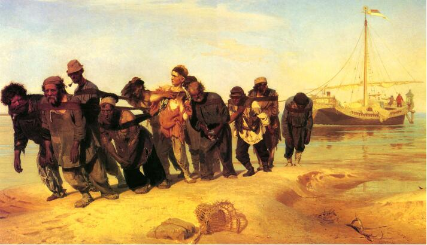

伏尔加河上的纤夫
语文课本
天空晴朗。在辽阔的伏尔加河上，有一艘货船，因为是逆风行使，所以帆没有张起来。河面上映着倒影。一群穿着破烂的纤夫，迈着沉重的步子，蹋着黄沙，沿着河岸一步一步向前走。他们大多身子向前倾，可见都在使劲，可见船上载着很重的货物。 领头的纤夫是个肩膀宽阔的老头儿。他包着头巾，衣服上打着补丁，眼睛漠然地望着前方，路还长着哩！老头儿的右边是一个头发胡须都很浓密的中年人。他身体强壮，显得很有力气。这两个人走在最前头。紧跟在他们后面的是个高个子，还保留着农民的打扮。他直着身子，没精打采地衔着烟斗，好像已经厌倦了拉纤的生活。高个子旁边是个肌肉结实的小伙子。他使着蛮劲向前拉，往上凝视的目光充满了诅咒和抗议。在这有群人中有个穿着红上衣的少年，从年龄和肤色都可以看出，他拉纤的日子还不久，还不习惯这种沉重的劳动。他拉了一下把他的肩膀勒得发疼的纤绳，好像要摆脱这种与他的年龄很不相称的重荷。少年右面的老头儿好像有病。他那微微张开的嘴唇和没精打采的目光，显得又虚弱又疲惫。他正在用袖子拭额上的汗珠。一个皮肤黝黑的汉子在少年后面，只露出半边脸。他用同情的目光看着前面白皙的少年和秃顶的老头儿。这个老头儿显然已经习惯于这种工作了，他一边往前走，一边装他的烟袋。后面是个退伍不久的士兵，还穿着官家发给他的皮靴。士兵后面是个高个子，他转过脸去，愤怒地朝货船上望，一定是货船的老板在咒骂他们，驱赶他们。走在最后的是一个神态沮丧的老头儿。他低着头，无可奈何地拖着沉重的步子，拼着命拉着纤绳往前迈步。 这幅画是19世纪70年代俄国画家列宾的作品。当时，俄国的劳动人民处在沙皇的黑暗统治和资本家的残酷剥削之下，过着非常贫穷非常痛苦的生活。这幅画上的纤夫，为了挣得一块面包，不得不贱价出卖劳动力，终年拉着沉重的货船，在伏尔加河上来来去去。